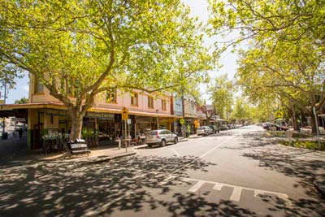

Suburbs
MORE
Suburbs in Melbourne CBD

Street Corner
The City of Melbourne municipality includes 14 suburbs that people from many cultures call home and where diverse private businesses and government organisations are located. Our 37.7 km2 municipality includes most of Melbourne's famous sporting venues and major parks and gardens. Although there are 14 suburbs, we've combined them into 11 small area profiles for reporting purposes.
Data Support
Here is the total average index of Melbourne CBD in all the suburbs
Crime Severity Index
Perceptions of Security
Inhabitants Kindness
Comprehensive Safety